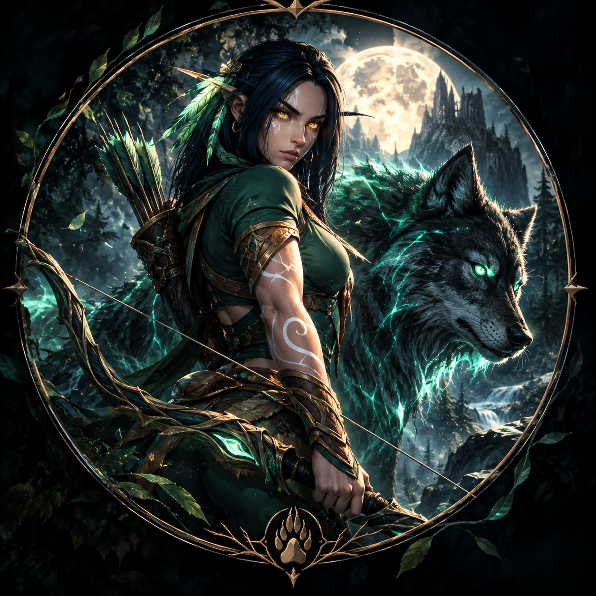
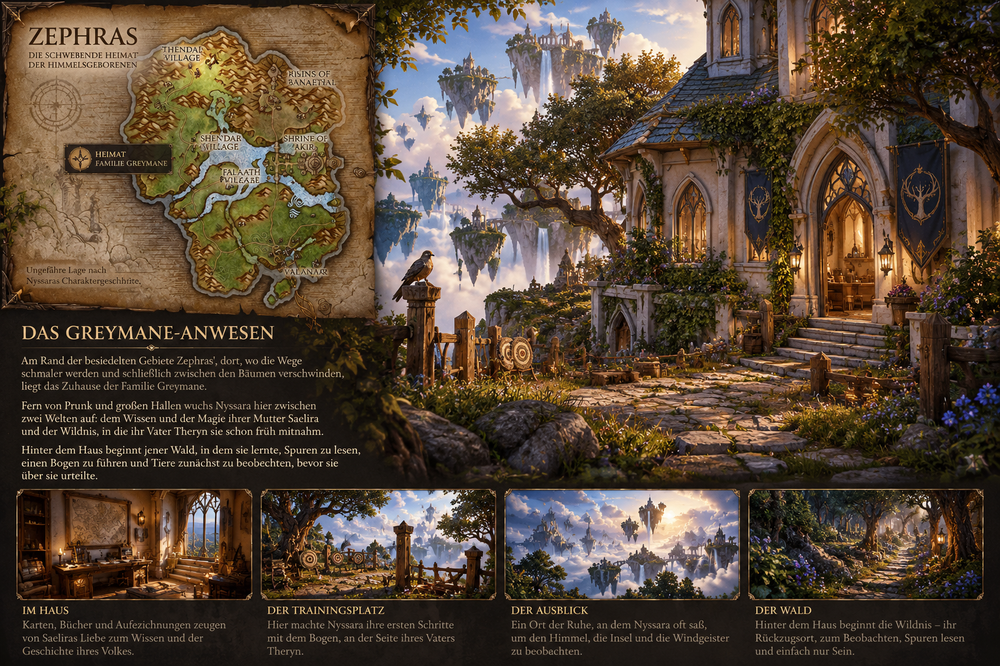

Theryn Greyfang
Vater · Jäger · Kundschafter
Fährtenleser und Naturmensch. Von ihm hat Nyssara ihre Naturverbundenheit, den Umgang mit dem Bogen und ihr Wissen über das Überleben in der Wildnis.

WoW Forever · Charakterchronik
Himmelsgeborene · Shen'dorei · Jägerin
„Die Natur muss nicht beherrscht werden. Man muss lernen, mit ihr zu leben.“
CHARAKTERPROFIL
Eine junge Shen'dorei, deren Heimat Zephras war – deren Geschichte aber erst in Azeroth beginnt.
HINTERGRUND
Nyssara wurde auf Zephras geboren. Ihre Familie führt ihre Tradition auf jene Rebellen aus Eldre'Thalas zurück, die sich von arkaner und dämonischer Abhängigkeit abwandten und eine stärkere Verbindung zur Natur suchten.
Die Greyfangs sind weder Adel noch eine berühmte Blutlinie. Ihr Name steht für eine über Generationen bewahrte Haltung: beobachten, verstehen und mit der Wildnis leben, statt sie beherrschen zu wollen.
Schon früh lernte Nyssara den Umgang mit dem Bogen, Spuren zu lesen, Tiere zu beobachten und sich in der Wildnis zu orientieren. Als sich der Weg nach Azeroth öffnet, empfindet sie neben aller Unsicherheit vor allem eines: Fernweh.
HEIMAT AUF ZEPHRAS
Nördlich auf Zephras, unweit von Thendal Village, liegt das Zuhause der Familie Greyfang – nah genug am Dorf, um Teil seiner Gemeinschaft zu sein, und doch dort, wo die gepflegten Wege langsam der Wildnis weichen.

Das Greyfang-Haus ist kein herrschaftlicher Sitz und kein Zeugnis einer berühmten Blutlinie. Es ist ein altes Shen'dorei-Familienhaus aus hellem Stein, über Generationen bewohnt und längst mit seiner Umgebung verwachsen. Ranken ziehen sich an den Mauern empor, Moos liegt zwischen den Steinen und die Äste eines alten Baumes reichen bis über das Dach.
Hier wuchs Nyssara zwischen den beiden Welten ihrer Eltern auf. Im Inneren finden sich Saeliras Bücher, Karten und Aufzeichnungen über Magie und die Geschichte ihres Volkes. Hinter dem Haus beginnt dagegen Theryns Welt: ein einfacher Trainingsplatz mit alten Zielscheiben, an dem Nyssara ihre ersten Schritte mit dem Bogen machte.
Ein schmaler Pfad führt vom Anwesen tiefer in die Wildnis. Nyssara ging ihn schon als Kind unzählige Male. Dort lernte sie, Spuren zu lesen, Tiere aus der Entfernung zu beobachten und sich lautlos durch die Natur zu bewegen. Für sie endet ihr Zuhause deshalb nicht an der Haustür – der angrenzende Wald, die Höhen und der weite Blick über Zephras gehören ebenso dazu.
FAMILIE GREYFANG
Vater · Jäger · Kundschafter
Fährtenleser und Naturmensch. Von ihm hat Nyssara ihre Naturverbundenheit, den Umgang mit dem Bogen und ihr Wissen über das Überleben in der Wildnis.
Mutter · Wissen · Magie
Stärker in der traditionellen Shen'dorei-Kultur verwurzelt und mit arkaner sowie elementarer Magie vertraut. Sie lehrte Nyssara, Magie zu verstehen, ohne ihr blind zu vertrauen.
Nyssara ist das einzige Kind der beiden und trägt die Tradition der Greyfangs in ihrer Generation allein weiter.
PERSÖNLICHKEIT
Nyssara ist ruhig, selbstständig und Fremden gegenüber zunächst zurückhaltend – aber nicht feindselig. Andere Völker wecken vor allem ihre Neugier. Vertrauen schenkt sie langsam; wer es gewinnt, kann mit großer Loyalität rechnen.
Sie besitzt Empathie, doch gesellschaftliche Feinheiten, Intrigen, höfliche Lügen und Sarkasmus fallen ihr manchmal schwerer als die Körpersprache eines Tieres.
MAGIE & WINDGEISTER
Nyssara betrachtet Magie als Bestandteil der Welt. Problematisch wird sie für Nyssara dort, wo aus Verständnis der Wunsch nach vollständiger Kontrolle entsteht. Den Windgeistern begegnet sie mit Dankbarkeit und Respekt, jedoch nicht mit blinder Verehrung.
REISETAGEBUCH
Von Nyssaras letztem Morgen in ihrer Heimat bis zu ihren tatsächlichen Erlebnissen in WoW Forever – hier wächst ihre Reise Kapitel für Kapitel.
REISEVERZEICHNIS
PROLOG
Der Morgen, an dem Nyssara nicht länger als Kind zum Thendalhain ging.
Nyssara wusste seit Tagen, was dieser Morgen bedeutete. Erwachsen zu werden war für die jungen Himmelsgeborenen Thendals kein plötzliches Ereignis, sondern der Beginn eines neuen Abschnitts. Wer diesen Schritt erreichte, begab sich in den Thendalhain, um dort den eigenen Weg in der Gemeinschaft anzutreten.
Saelira war bereits wach, als Nyssara an diesem Morgen das Haus verließ. Es brauchte keine großen Worte. Ihre Mutter kannte die Aufregung, die Nyssara hinter ihrer ruhigen Art zu verbergen versuchte. Eine Umarmung, einige leise Wünsche für den Weg – mehr war nicht nötig.
Draußen wartete Theryn. In der Hand hielt er seinen alten Jagdbogen.
„Komm. Wir gehen.“
Gemeinsam folgten Vater und Tochter dem schmalen Pfad, der vom Greyfang-Haus durch die Wildnis in Richtung Thendalhain führte. Es war derselbe Weg, den sie seit Nyssaras Kindheit unzählige Male gegangen waren. Hier hatte Theryn ihr beigebracht, Spuren zu lesen. Hier hatte sie gelernt, ein Rascheln im Unterholz nicht nur zu hören, sondern zu verstehen.
Doch an diesem Morgen erklärte er nichts. Er stellte keine Fragen und korrigierte keinen ihrer Schritte. Irgendwann bemerkte Nyssara, dass sie vorausging – und ihr Vater ihr folgte.
Kurz bevor die ersten Wege des Thendalhains zwischen den Bäumen sichtbar wurden, blieb Theryn stehen. Er betrachtete den Bogen in seiner Hand einen Moment lang und reichte ihn seiner Tochter.
„Du brauchst deinen eigenen Weg. Aber du musst ihn nicht mit leeren Händen beginnen.“
Es war kein legendäres Erbstück und keine Waffe aus alten Geschichten. Es war der Bogen, mit dem Nyssara ihren Vater seit ihrer Kindheit durch die Wälder hatte ziehen sehen. Gebrauchsspuren zeichneten das Holz. Für jeden anderen war es ein Jagdbogen. Für Nyssara war es ein Stück Zuhause.
Sie gingen noch ein Stück weiter, bis Theryn erneut stehen blieb. Nyssara wandte sich zu ihm um.
„Du kommst nicht mit?“
Theryn schüttelte den Kopf.
„Bis hierher war es mein Weg. Der Rest gehört dir.“
Nyssara kannte den Thendalhain. Sie war schon oft dort gewesen. Und doch fühlte sich der vertraute Ort an diesem Morgen anders an. Zum ersten Mal ging sie nicht als Kind an der Seite ihrer Eltern hinein.
Sie legte die Hand um den vertrauten Griff des Bogens und ging weiter.
Im Thendalhain trifft Nyssara auf Ailee Farheart. Ihre Ankunft wird bereits erwartet. Ailee weist ihr den nächsten Schritt: Nyssara soll den Dorfanführer Rorian den Tagsucher am Eingang des Altvaterbaums aufsuchen.
Hier beginnt Nyssaras Reise in WoW Forever.Gefährten, Entdeckungen, ihr späterer tierischer Begleiter und prägende Erlebnisse werden hier nach und nach Teil ihrer Geschichte.